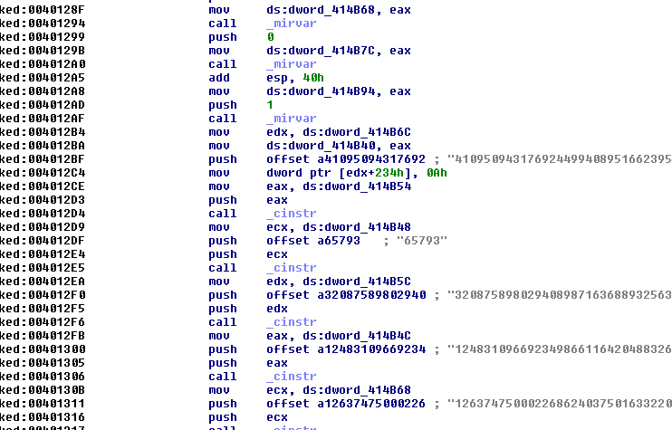

Selon Robert,
Pamplemousse:1666; du néerlandais pomelmoes "gros citron" Fruit du pamplemoussier,gros agrume sphérique à peau JAUNE,juteux et légèrement amer.
Droit de réponse : Notez néanmoins que ++meat pense que le pamplemousse est orange...
1.Introduction
Je vais vous présenter ici une analyse du keygenme Pamplemousse.exe de Bigbang. Ce binaire a été codé en C et utilise entre autre MIRACL, lib qui permet de réaliser des calculs mathématiques sur de grands nombres (autant de chiffres que l'on veut) appelés communément BIGNUMS.
Bigbang est un adepte de la cryptographie et il nous le démontre ici de façon très intéressante. En effet, pour résoudre ce keygenme, il est nécessaire de connaître les grands principes de base de la cryptographie actuelle, à savoir :
- Les principes de HASHAGE de messages ( ici, SHA-1)
- Les techniques de résolution d'un LOGARITHME DISCRET (ici, j'utilise une implémentation basée sur la méthode de Pohlig-Hellman)
- Le problème de l'attaque d'un RSA,protocole à clés publiques (ici, RSA à 222 bits que j'ai bruteforcé à l'aide de PARI/GP)
Dans ce tutorial, nous verrons donc comment implementer un SHA-1 pour réaliser un keygen, comment attaquer un problème de logarithme discret (DLP) par une méthode de bruteforce rapide et comment attaquer un RSA 222 par bruteforce également. La partie résolution sera essentiellement mathématique et nécessite donc un minimum de connaissances en arithmétique modulaire.
1.1.Considérations sur MIRACL
Je vais donc commencer cette étude à l'envers. Je vous propose d'abord une rapide introduction du fonctionnement de la lib MIRACL du point de vue du codeur. Il me semble que le reversing d'une telle lib nécessite a priori une connaissance minimale sur l'utilisation de cet outil. Une fois que j'aurai établi les bases, je regarderai cette lib du point de vue du reverser en utilisant des outils tels que OllyDbg ou IDA.
MIRACL est donc une lib C qui permet de gérer de grands nombres (BIGNUMS). Elle dispose d'une centaine de fonctions pour réaliser les opérations arithmétiques qui vont des plus simples comme l'addition aux plus complexes comme le CRT ou les courbes elliptiques. Voici donc notre routine d'introduction qui permet d'additionner deux bignums :
#include "miracl.h"
int main()
{
big x,y;
miracl *mip;
mip=mirsys(100,0,0); --------------- Initialise MIRACL
mip->IOBASE=10; --------------------- Fixe la base numérique
x = mirvar(0); ---------------------- Initialise le bignum x
y = mirvar(0);
cinstr(x,"123456789"); -------------- Affecte une chaine à un bignum
cinstr(y,"789456213");
add(x,y,x); ------------------------- x = x + y
mirkill(x); ------------------------- Détruit le bignum x
mirkill(y);
return 0;
}
Nous voyons donc que l'initialisation d'un bignum se fait toujours à l'aide de MIRVAR et que sa destruction se fait à l'aide de MIRKILL. CINSTR est une fonction très utile qu'il faut également retenir puisqu'elle convertit une chaine en un bignum en respectant la base.
Pour résumer ce rapide aperçu, nous retiendrons les choses suivantes :
- 1. MIRVAR permet de créer un nouveau Bignum
- 2. MIRKILL permet de détruire un tel nombre
- 3. CINSTR permet de convertir une chaine en un bignum
Plaçons nous dès à présent du côté du reverser. Si nous désassemblons ou débuggons une routine codée à l'aide de MIRACL, nous aurons une série de calls incompréhensibles.
Il existe en fait depuis longtemps 2 techniques pour identifier les routines de MIRACL utilisées dans un binaire.
Première méthode : utiliser IDA
Il s'agit de la méthode la plus simple et la plus efficace. Je l'ai découverte en parcourant l'un des articles d'initiation à la cryptographie écrit par +Christal intitulé "Crypto4Newbies". IDA est un formidable désassembleur capable d'identifier des routines existantes en utilisant des signatures. Ces dernières sont stockées sous forme de fichiers *.sig dans le sous-dossier C:\Program Files\IDA\sig . Pour identifier les fonctions de MIRACL, il suffit donc de disposer d'un fichier miracl.sig permettant la reconnaissance. Pour générer un tel fichier, il suffit de disposer du fichier miracl.lib et d'utiliser l'outil FLAIR de IDA (Fast Library Acquisition for Identification and Recognition).
Pour faire plus simple, je mets à disposition le fichier ICI.
Pour utiliser la reconnaissance FLIRT, il suffit donc au moment du désassemblage de faire SHIFT + F5. Cette commande permet d'ouvrir la 'signatures Windows'. Il suffit alors de taper INS et de choisir la signature pour miracl.
Après reconnaissance des fonctions MIRACL, nous devons obtenir un code semblable à celui-ci :

Nous pouvons y voir dès à présent les fonctions MIRVAR et CINSTR et en 0x4012C4, on voit apparaître le choix de la base 10.
CHOIX de la BASE 10 en ASM :
4012C4 mov dword ptr [edx + 234h], 0Ah
CHOIX de la BASE 10 - CODE SOURCE
mip->IOBASE=10; --------------------- Fixe la base à 10
Deuxième méthode : identification manuelle.
On peut néanmoins faire le même travail à la main. En fait, chaque routine de MIRACL est identifiée par un numéro unique visible en clair dans le code. Par exemple, si nous jetons un coup d'oeil sur la fonction MIRVAR, on peut voir ceci :
On voit en 0x403E56 le format de code suivant : mov dword ptr [esi+eax*4+20], 17h. Le 17h est le numéro d'identification pour la fonction MIRVAR.
Une liste complète des fonctions MIRACL a déjà été dressée par bLaCk-eye que vous pouvez consulter ICI. Le tutorial concernant cette reconnaissance est aussi à disposition ICI.
Bref, vous l'aurez compris, quelquesoit la méthode employée, vous pouvez toujours identifier les routines de MIRACL très facilement
Remarque :
Malheureusement, parce que les routines de MIRACL sont aisément identifiables, certains codeurs ne se sont pas fait prier pour les modifier en profondeur. Ceci a pour conséquence de rendre les deux méthodes précédentes complètement inefficaces. Vous pouvez à titre d'exemple étudier le keygenme nommé "Citron" du même auteur qui pose gentiment ce genre de problèmes. Cela dit, nous sommes avertis, si IDA ne reconnait pas MIRACL, ceci ne veut pas dire que MIRACL n'est pas employé.
Troisième méthode : Format d'un bignum miracl.
Le problème reste donc entier quant à la reconnaissance de ces fameuses routines. Il existe néanmoins quelques "trucs" pour détecter leur présence. MIRACL stocke les bignums en mémoire d'une façon assez particulière qui vaut la peine d'être étudié.
Je rappelle que pour définir un bignum, nous devons faire appel à la fonction MIRVAR. En asm, on doit pouvoir repérer un code similaire à celui-ci :
push 0 call _mirvar mov dword ptr ds:[414B70],eax
La fonction MIRVAR renvoie donc dans eax l'adresse du bignum nouvellement créé et cette adresse est stockée à l'adresse mémoire 414B70. Dans notre exemple ci-dessus, si nous nous rendons à l'adresse pointée par eax (dans mon cas, ce sera 871CC0), nous obtenons quelque chose qui doit ressembler à ceci :
Le bignum est en fait une STRUCTURE composée de 3 champs, à savoir:
- +00 : taille du bignum en dwords et signe du bignum
- +04 : Adresse de la valeur absolue du bignum
- +0C : Valeur absolue du bignum stockée au format little endian.
Dans notre exemple, nous voyons donc en 871CC4, la valeur 871CCC qui pointe vers le début de notre bignum (ici, 0).
Si nous affectons une valeur (par exemple, 65793d, soit 101010 en hexa) à un bignum,nous obtenons quelque chose qui doit ressembler à ceci :
Vous voyez donc dans le premier champ (en 872CC0) la valeur 1 qui indique que le bignum est contenu sur 1 DWORD, dans le troisième champ (en 872CCC), vous voyez 65793 stocké en little endian et en hexadécimal.
Désormais, si vous voyez un keygen qui stocke ses nombres sous cette forme là, attendez-vous fortement à ce que ce soit du MIRACL.
Il est donc temps pour nous de jeter un oeil à la structure générale de ce keygen...